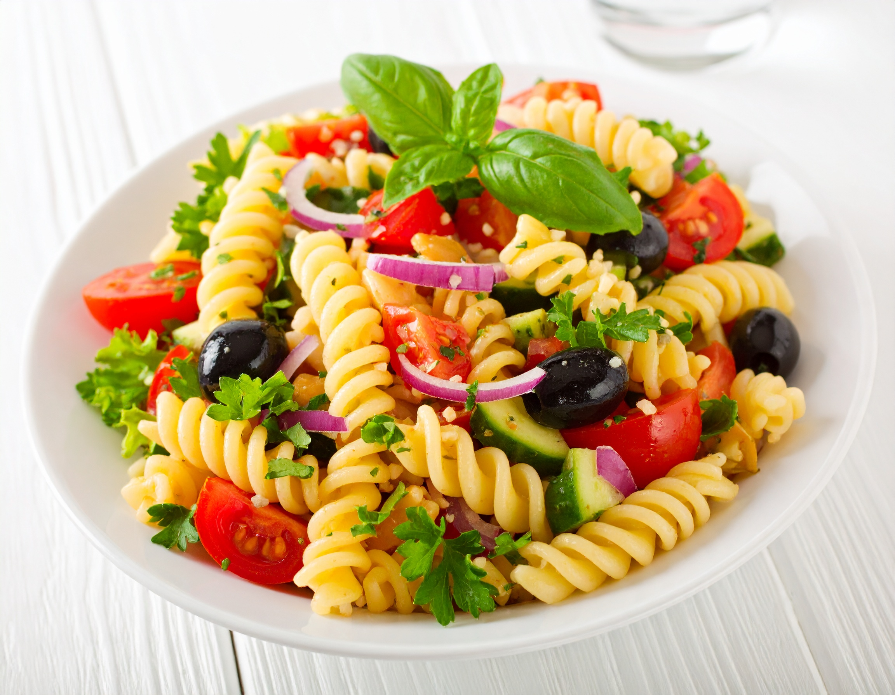

The world's best pasta pasta-salad recipe

Fresh, colorful, and full of flavor — pasta salad is a perfect dish for picnics, BBQs, or a light lunch.
This recipe combines tender pasta with crunchy vegetables and a tangy dressing for a refreshing meal.
Ingredients
- 250g pasta (fusilli or penne)
- 1 cup cherry tomatoes (halved)
- 1 cup cucumber (diced)
- 1/2 cup red onion (finely chopped)
- 1/2 cup black olives (sliced)
- 1/2 cup feta cheese (crumbled)
- 3 tbsp olive oil
- 2 tbsp red wine vinegar
- 1 tsp dried oregano
- Salt and pepper to taste
Instructions
- Cook the pasta according to package instructions. Drain and let cool.
- In a large bowl, combine pasta, tomatoes, cucumber, onion, olives, and feta.
- In a small bowl, whisk together olive oil, vinegar, oregano, salt, and pepper.
- Pour dressing over salad and toss to combine.
- Chill in the fridge for at least 30 minutes before serving for best flavor.
back to Homepage